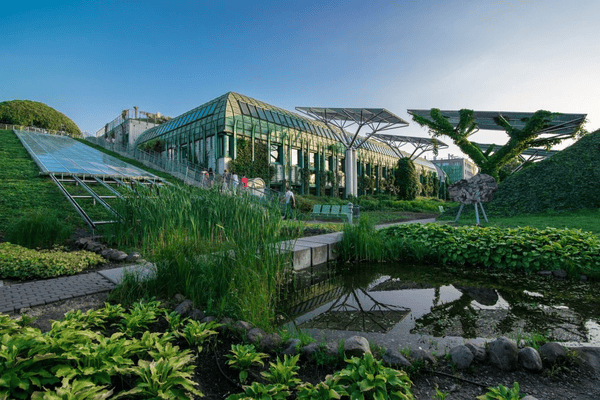

Zielone budynki
Co to tak naprawdę zielone budynki?
W praktyce zielone budynki oznaczają nie tylko ekologiczne rozwiązania, takie jak odnawialne źródła energii czy inteligentne systemy zarządzania mediami. To również optymalizacja cyklu życia budynku – od doboru materiałów po gospodarkę odpadami. Wiąże się to przede wszystkim z użyciem mniejszej energii oraz wody, co przekłada się na niższe koszty. Ponadto, takie budynki oferują lepszą jakość powietrza wewnątrz budynku, co pozytywnie wpływa na zdrowie i komfort mieszkańców.
W dłuższej perspektywie, zielone budownictwo przyczynia się do ochrony środowiska i redukcji emisji gazów cieplarnianych. Do inwestycji reprezentujących budownictwo ekologiczne zalicza się m.in. budynki wielorodzinne, szkoły czy hotele, które zostały wybudowane z użyciem rozwiązań
w minimalnym stopniu oddziałujących na środowisko. W konsekwencji oddany do użytku obiekt przez cały cykl swojego życia zużywa mniej zasobów (np. energii elektrycznej czy wody) niż budynek wzniesiony w technologii tradycyjnej.
Zielone budynki w budownictwie
Sektor mieszkalny od dłuższego czasu jest pod ścisłym nadzorem. W budownictwie stosuje się materiały budowlane, które są przyjazne dla środowiska i mają niski wpływ na środowisko naturalne. Przykłady takich materiałów to drewno
z certyfikowanych źródeł, recyklingowane metale oraz materiały izolacyjne wykonane z naturalnych surowców. Jednym
z najczęściej wybieranych materiałów jest beton ekologiczny, który zawiera w swoim składzie materiały z recyklingu, takie jak popiół lotny czy granulaty z odpadów budowlanych. Jest on mniej obciążający dla środowiska, gdyż proces jego produkcji generuje mniejsze emisje CO2 w porównaniu do tradycyjnego betonu. W budownictwie pasywnym i ekologicznym niezwykle ważne są także materiały o dobrych właściwościach termoizolacyjnych, takie jak wełna drzewna, korek, celuloza czy naturalna wełna owcza. Charakteryzują się one doskonałą izolacją termiczną, co pozwala na znaczne obniżenie kosztów ogrzewania budynku. Ponadto są to materiały w pełni biodegradowalne, co sprawia, że ich stosowanie jest bardziej przyjazne środowisku niż tradycyjne izolacje syntetyczne.
Innowacyjne technologie w zielonym budownictwie:
Współczesne technologie pozwalają na wdrażanie bardziej efektywnych rozwiązań, które w znaczący sposób redukują negatywny wpływ budynków na środowisko. Przykładem takich technologii jest ogrzewanie geotermalne, które wykorzystuje energię zgromadzoną w ziemi do ogrzewania budynku oraz podgrzewania wody. Tego typu instalacje charakteryzują się wysoką efektywnością energetyczną oraz niskimi kosztami eksploatacyjnymi, ponieważ wykorzystują odnawialne źródła energii. Inną innowacyjną technologią są panele fotowoltaiczne, które przekształcają energię słoneczną w energię elektryczną. Montaż paneli fotowoltaicznych na dachu budynku pozwala na zasilanie go energią pochodzącą ze słońca, co znacząco obniża koszty zużycia energii oraz zmniejsza emisję gazów cieplarnianych. Dodatkowo, zyskuje się niezależność energetyczną, co staje się coraz ważniejsze w kontekście rosnących cen energii. Budynki ekologiczne są wyposażone także w efektywną wentylację, zapewniają dostęp do odpowiedniej ilości światła dziennego i spełniają wysokie standardy akustyczne. W Polsce notuje się wzrost zainteresowaniem budowy ekologicznych budowli - Według raportu PLGBC, w okresie od marca 2024 do marca 2025 całkowita powierzchnia certyfikowanych ekologicznie budynków mieszkalnych wzrosła o 60 procent. Obecnie na rynku w Polsce mamy kilka certyfikatów dotyczących standardów zielonych budynków: BREEAM, DGNB, GBS, HQE, LEED, WELL i ZIELONY DOM.
Główne elementy zielonego budownictwa
1. Efektywność energetyczna
fundament zielonego budownictwa Efektywność energetyczna ma na celu projektowanie i budowę budynków w sposób, który minimalizuje zużycie energii potrzebnej do ich funkcjonowania. Ważną cechą jest stosowanie odpowiednich materiałów do izolacji termicznej, aby ciepło nie miało jak uciekać na zewnątrz. Panele fotowoltaiczne oraz odpowiednia wentylacja pozwalają zmniejszyć zapotrzebowanie na energię elektryczną i cieplną.
2. Gospodarka wodna
oszczędność i zarządzanie zasobami Zielone budynki kładą nacisk na gospodarowanie wodą deszczową oraz minimalizację zużycia wody. Rozwiązanie takie jak zbiorniki na wodę deszczową, automatyczne systemy nawadniające czy urządzenia oszczędzające wodę pozwalają zmniejszyć zużycie wody oraz związane z tym koszty. Zielone budownictwo promuje również wykorzystanie zielonych dachów i ogrodów deszczowych, które poprawiają bilans wodny budynków oraz redukują ryzyko powodziowe.
3. Zrównoważona lokalizacja i wpływ na środowisko
Podczas projektowania budynków zielonego budownictwa istotnym elementem jest wybór odpowiedniej lokalizacji. Budynki powinny być usytuowane w taki sposób, aby miały minimalny wpływ na otaczający krajobraz, zapewniały mieszkańcom optymalne warunki życia oraz nie wywierały potrzeby niszczenia otaczającego ekosystemu. W kontekście urbanistyki zielone budownictwo stawia na bliskość transportu publicznego, zielonych przestrzeni miejskich
i miejsc przyjaznych pieszym i rowerzystom.
Zielone budownictwo stawia również na komfort i zdrowie mieszkańców. Ważnym celem jest tworzenie przestrzeni, które sprzyjają dobremu samopoczuciu, odpoczynkowi i pracy. Mowa o naturalnym oświetleniu, dobrym mikroklimacie, a także zastosowaniu materiałów nietoksycznych i antyalergicznych. Odpowiednia wentylacja, niska wilgotność powietrza oraz możliwość obcowania z naturą w postaci ogrodów czy tarasów to elementy, które znacząco wpływają na jakość życia.
Zdjęcia
